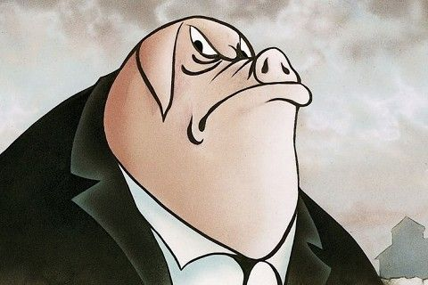
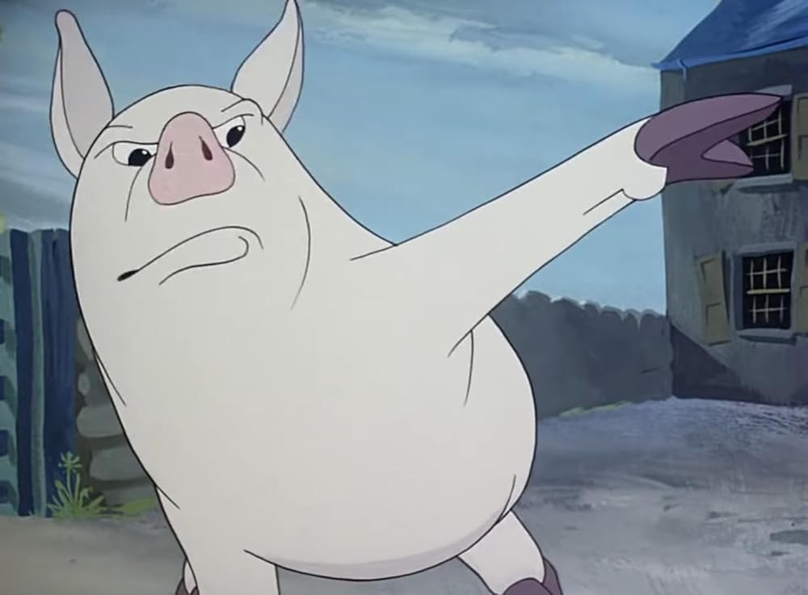
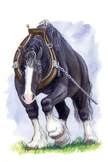
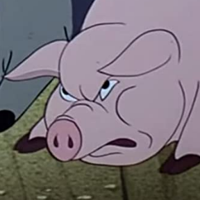
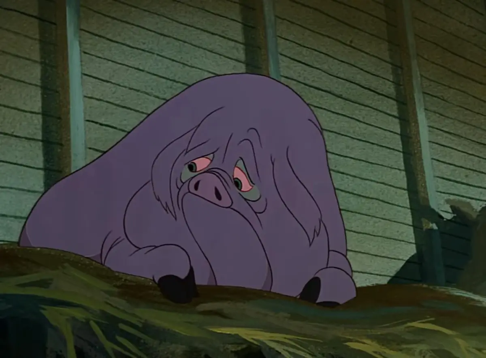

Power
Napoleon
Represents Joseph Stalin and the corruption of revolutionary leadership.
A Manual for Vigilance
A timeless warning about power, propaganda, and the corruption of revolutionary ideals.
Begin the JourneyPublished in 1945, Animal Farm remains one of the most influential political allegories ever written.
Through the rise and fall of a revolutionary farm, George Orwell explores how power can corrupt ideals, manipulate truth, and reshape society.

Follow the events that transformed a dream of equality into a system of oppression.
A revolution begins with hope and ends with oppression.

Represents Joseph Stalin and the corruption of revolutionary leadership.

Represents Leon Trotsky and ideological reform.

Represents the hardworking working class.

Represents propaganda and manipulation.

Represents the origins of revolutionary ideals.
A symbol of political promises, labor, and manipulation.
Fear, repression and control.
The manipulation of truth.
The manipulation of truth.
The corruption of power.
Experience Animal Farm through a visual interpretation that captures Orwell's warning about power and corruption.
Four legs good, two legs bad.
“Napoleon is always right.”
“All animals are equal, but some animals are more equal than others.”
How authority becomes domination.
How information shapes reality.
How history can be rewritten.
Why critical thinking matters.
How well do you understand the story, symbolism and allegories of Animal Farm?
Can truth survive propaganda?
Can freedom survive fear?
Can equality survive privilege?
Can citizens remain vigilant?
Can truth survive propaganda?
Can freedom survive fear?
Can equality survive privilege?
Can citizens remain vigilant?